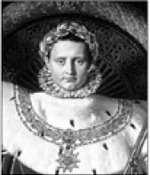
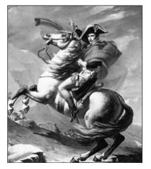
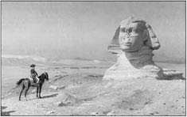
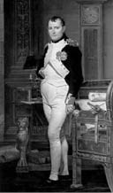

Napoleon Bonapart, Ressam Jean Auguste Dominique Ingres, 1806
Napoleon Bonaparte (1769-1821)
“Bir tek düşmanla sık sık dövüşmemelisin, çünkü ona bütün savaş sanatını öğretirsin.”
1769 Korsika-Ajaccio doğumlu Napoleon, Paris Askeri Akademisi’nin ardından Valence’daki topçu alayına katıldı.
Boyunun kısa olması nedeniyle askeri okuldaki arkadaşlarının alay konusu olur ve ona şöyle derler:
“Hey Bonaparte! Sen ata binene kadar savaş biter.”
Napoleon ise verdiği cevapla gelecekle ilgili kurduğu hayalleri anlatmış olur.
“Ben savaş çıktığında ata binmeyeceğim. Ben ata bindiğimde savaş çıkacak!”
Topçu birliklerinin komutanlığına getirildiği 1794 yılının ardından Fransız orduları başkomutanı oldu. Savaş oyunlarıyla dolu İtalya Seferi’nin sonrasında elde ettiği başarılardan dolayı ünü artarak devam etti.
İspanya Kralı, Napoleon Bonapart karşısında yenilmiş ve esir düşmüştü. Her şeyini kaybeden kralın gururu da incinmişti. Fakat kral, bunu belli etmeme gayretiyle Napoleon’a şöyle dedi:
“Siz yalnızca para, altın ve toprak elde etmek için savaşırsınız. Oysa biz, onur ve namus için savaşırız.”

Napoleon Alp Dağları’nda, Ressam Jacques Louis David, 1800
Kralın içinde bulunduğu durumu anlayan Napoleon ona sessizce şunları söyledi:
“Doğru söylüyorsunuz, kimin neye gereksinimi varsa onun için savaşır.”
Napoleon Bonaparte, savaş meydanlarında başarıdan başarıya koşuyordu. Bu onun daha büyük hedefler belirleme cesaretini artırıyordu. Yeni planında tüm doğuyu ele geçirmek vardı.
Napoleon savaş hazırlığındaydı. Bu arada gelen istihbarat bilgileri de değerlendirilerek düşmanın gücü hak-134 kında fikir ediniliyordu. Komutanları düşman birliklerinin yüz bini bulduğunu ve bu durum karşısında işlerinin oldukça zor olduğunu belirttiler ümitsizce.
Tam bu esnada Napoleon, “Endişe edecek bir şey yok ortada” der sakin bir şekilde, “Bizim de yüz bin kişilik ordumuz var, yani sayılarımız eşit”.
Üst düzey komutanlar hayretle birbirlerinin yüzüne bakarlar. Ordularının tamamının elli bin askerden oluştuğunu herkes çok iyi bilmektedir.
Napoleon onları daha fazla merakta bırakmamak için, kendinden emin bir tavırla sözlerini şöyle sürdürür:
“Hesap şöyle: Elli bin ordumuzsa, elli bin de benim!”
Napoleon Akdeniz’de karşısına çıkan İngiliz donanmasını mağlup ettikten sonra Malta’yı alır. Hızla ilerleyerek İskenderiye’ye çıkıp Memlukları yener. Bu hızlı ilerleyişi Suriye’de önemli bir mevkide bulunan Akka Kalesi’nde 1799 yılında son bulur. Yetmiş yaşında bir kale komutanı olan Cezzar Ahmed Paşa’nın başarılı savunmasına daha fazla dayanamayan Napoleon, ordusunu Mısır’a çekerek Fransa’ya döner. Bu olay sonrası Napoleon, “Akka olmasaydı, Doğu İmparatoru olurdum” demiştir. Hükümet üyelerinden biri savaşta uyguladığı taktik nedeniyle Napoleon’u eleştirdikten sonra parmağını harita üzerinde gezdirerek “Önce şu bölgeye gelerek burayı almalıydınız, sonra karşıya geçerek şurayı ele geçirmeliydiniz, daha sonra ise.” der.
O ana kadar bakanı sessiz bir şekilde dinleyen Napoleon daha fazla dayanamayarak şöyle der:
”Evet, haklısınız... O bölgeler parmakla alınabilselerdi, ben de dediğiniz gibi yapardım!”

Napoleon Kahire’deki Büyük Gize Sfenksi önünde, Ressam Jean Leon Geröme, 19. yüzyıl
Danışman aynı saygıyla cevap verir, “O da kızımdır efendim!”
Kısa boyluluğu ile bilinen Napoleon, kütüphanesinin üst rafında bulunan kitabı alamayınca ondan daha uzun boylu olan bir yakını “Sizden daha yüksek olduğum için izninizle kitabı ben alayım efendim” der.
Bu sözlere sinirlenen imparator, “Hayır” der. “Siz benden yüksek olamazsınız, yalnızca biraz daha uzunsunuz o kadar.”
Tarihte özellikle askeri zekâsıyla adından söz ettiren Napoleon Bonaparte, son yıllarında aldığı yenilgilerin ardından tahttan indirilerek sürgüne gönderildi.

Napoleon, Ressam Jacques Louis David, 1812
1799 yılında gerçekleşen hükümet darbesinin ardından birinci konsül seçilen Napoleon, 1804’te Papa Pius VlI’nin elinden taç giyerek imparator olur. Bu arada yaptığı kanunlar ve reformlar sayesinde halk üzerindeki sevgisini artırır.
Napoleon bir yemek davetinde locadan bakarken yanında bulunan danışmanına misafirlerden birini işaret ederek sorar:
“Şu karşı masada oturan zevksiz hanım da kim böyle?”
“Eşimdir efendim” diye cevap verir danışman.
Ardından durumu kurtarmak amacıyla Napoleon “Ondan değil canım” der, “Yanında oturan kısa boylu hanımdan bahsediyorum”.
5 Mayıs 1821’de anılarını da yazdığı Atlantik’teki St. Helena adasında hayata gözlerini kapadı. Uşağının onu zehirleyip zehirlemediği ise hâlâ bir sır olarak gizemini korumaktadır.
“Cesaret hiç korkmamak değil, korkuya rağmen bir şeyler yapabilmektir.”